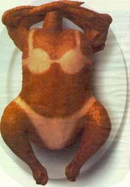

Receita de Frango

Sobre o prato:
Esse franguinho é mt top pô, tu tem q fazer pra se apreciar com tanta suculencia e crocância, um dos mais crias que tem
Ingredientes:
- 1 frango (se tiver)
- Sal
- Forno (opcional)
- Cuidado para não queimar as mãos
Passos:
- Pegue o frango e jogue um salzinho
- Agora é só meter no forno a muito quente e esperar ele ficar mais moreno
- Aguarde mais ou menos uns 7 segundos e estará pronto bem gostoso
- Agora é só apreciar seu frango